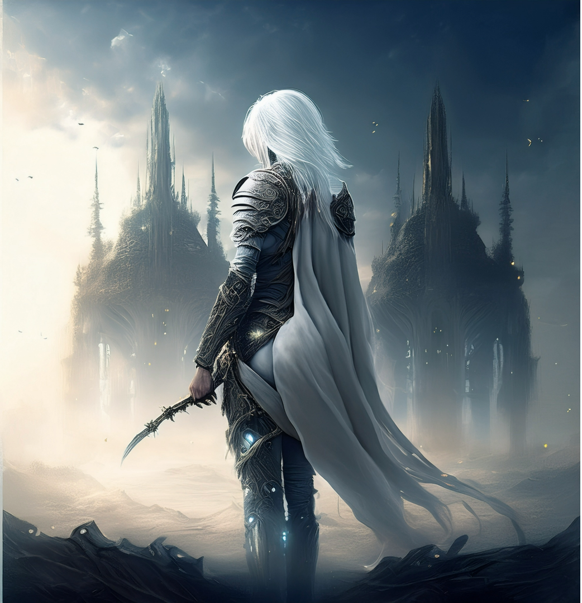
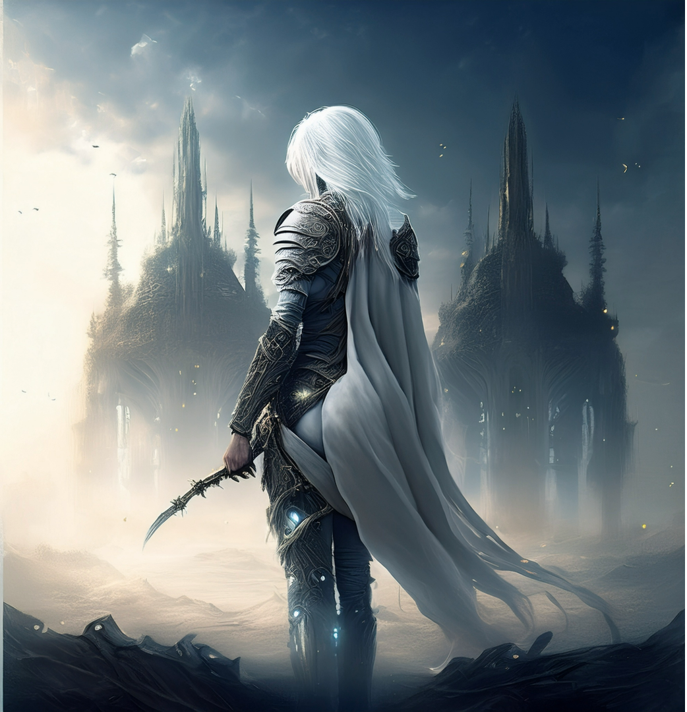
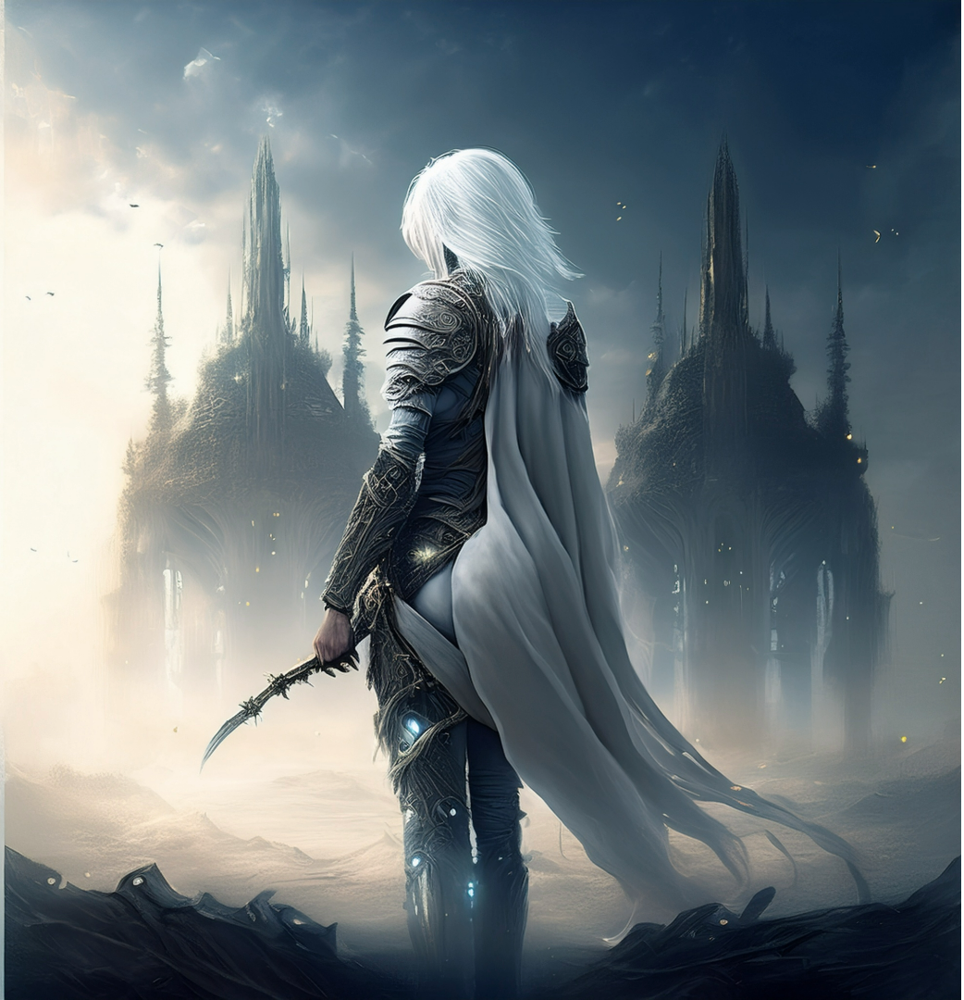

SEJA BEM-VINDO!
Você já ouviu falar de um mundo onde sombras caminham ao lado dos vivos, e a sobrevivência é o único destino certo? Independente da sua resposta, saiba que agora você está no lugar certo. Aqui, vou te mostrar um pouco sobre essa obra magnífica, onde coragem, medo e sacrifício se misturam em uma história que vem crescendo silenciosamente, mas de forma irresistível, nos corações daqueles que ousam sonhar... mesmo na escuridão.
SABER MAIS

O QUE É
Quantidade de capitulos
+2000 capitulos
emissão
Atualizações semanais
DATA DE LANÇAMENTO
2020 (em andamento)
PLATAFORMAS
Webnovel App, Amazon Kindle
Shadow Slave é uma web novel chinesa que acompanha a vida de Sunny, um jovem marcado pela pobreza que é jogado em um mundo cruel governado por monstros e horrores sobrenaturais. Ao longo da história, ele luta para sobreviver, evoluir e desvendar os segredos do mundo sombrio conhecido como Nightmare Spell.
A jornada de Sunny começa quando ele acorda no Mundo dos Pesadelos, um reino sombrio onde humanos são forçados a enfrentar criaturas aterrorizantes e desafios mortais. Após sobreviver à sua primeira provação, Sunny descobre que possui uma habilidade única: a capacidade de se transformar em uma sombra. Com essa nova habilidade, ele precisa aprender a navegar por um mundo onde a linha entre a realidade e o pesadelo é tênue.
Sunny e seus companheiros são enviados para uma antiga cidadela abandonada, onde segredos sombrios e criaturas corrompidas aguardam. Lá, ele enfrenta seu primeiro grande desafio como Despertado, descobrendo mais sobre seu passado e o verdadeiro propósito do Mundo dos Pesadelos. A Cidadela também revela os primeiros indícios de uma conspiração maior, envolvendo os Senhores dos Pesadelos.


Sunny é arrastado para um labirinto infinito, onde as almas dos que falharam no Mundo dos Pesadelos estão presas. Lá, ele encontra Nephis, uma guerreira misteriosa com seu próprio destino entrelaçado ao dele. Juntos, eles precisam enfrentar não apenas os horrores do labirinto, mas também as sombras de seus próprios traumas. Essa saga marca o início de uma aliança crucial para a sobrevivência de Sunny.
Conflitos entre facções de Despertados se intensificam, e Sunny se vê no meio de uma guerra onde lealdades são testadas. Ele precisa decidir se continuará apenas sobrevivendo ou se tornará um ator principal nesse jogo de poder. Suas habilidades como Shadow Slave são colocadas à prova contra inimigos que desafiam não apenas sua força, mas também sua sanidade.


Sunny e Nephis adentram um templo antigo, onde os segredos dos Primeiros Pesadelos estão guardados. Lá, eles descobrem a verdade por trás do Ciclo do Pesadelo e o papel dos Shadow Slaves. O templo também abriga uma entidade ancestral que testa a coragem e a determinação de Sunny, oferecendo-lhe um poder maior—mas a um custo terrível.
A cidade flutuante de Aurora, um dos últimos refúgios da humanidade, é invadida por pesadelos. Sunny e seus aliados precisam enfrentar uma horda de criaturas enquanto tentam salvar o que resta da civilização. Essa saga marca um ponto de virada na história, onde Sunny percebe que não pode mais fugir de seu destino—ele deve se tornar o herói que o mundo precisa, mesmo que isso signifique abraçar completamente sua natureza sombria.


Sunny e Nephis adentram um reino submerso onde os Primeiros Pesadelos foram selados. Lá, descobrem que as sombras são entidades conscientes e que o próprio Sunny pode ser a chave para libertá-las. Enquanto isso, um antigo inimigo ressurge, ameaçando corromper até mesmo a ligação entre Sunny e sua sombra.
Noctis, um aliado próximo de Sunny, revela sua verdadeira lealdade aos Senhores dos Pesadelos. Em uma batalha épica sob uma lua sangrenta, Sunny é forçado a confrontar a fragilidade de suas alianças e a aceitar que, no Mundo dos Pesadelos, até mesmo a confiança é uma ilusão. O preço da traição? A perda de um Fragmento de Memória essencial.


Para salvar Nephis de uma maldição irreversível, Sunny escala o Vulcão das Almas, onde os Despertados falecidos são consumidos pelo magma negro. Lá, ele enfrenta eco de seus próprios medos e encontra uma relíquia capaz de reescrever o destino—mas usá-la exigirá um sacrifício inimaginável: sua própria humanidade.
Sunny finalmente abraça seu legado como o verdadeiro Lorde das Sombras, despertando um poder ancestral que ameaça destruir o equilíbrio entre o Mundo Real e o dos Pesadelos. Agora, como uma figura temida por ambos os lados, ele precisa decidir se será um tirano ou o salvador que quebrará o Ciclo dos Pesadelos de uma vez por todas.

Nascido em um mundo onde a luz é um luxo raro, Sunny cresceu entre as sombras, invisível para aqueles que comandavam o mundo. Arremessado para dentro do Primeiro Pesadelo, ele aprendeu que sobreviver não era suficiente: era preciso evoluir. Moldado pelas trevas, Sunny encontrou poder onde outros viam apenas medo.
"Um escravo nunca confia em seu mestre."
Classe: [Cavaleiro das Sombras]
Personalidade: Sarcástico, resiliente, ambicioso
Atributo Principal: Adaptação às Sombras
Força: ★★★☆☆
Agilidade: ★★★★☆
Inteligência: ★★★★☆
Carisma: ★★☆☆☆
A Forgotten Island é um reino perdido, envolto em névoas e ruínas de um passado esquecido. Shades assombram suas sombras, repetindo tragédias antigas. No centro, a Eclipse Well corrói mentes, atraindo os condenados. Quem entra raramente escapa—a ilha consome memórias e almas, deixando apenas loucura. Um lugar onde o tempo morreu.
Treine seus reflexos capturando Sunny enquanto ele se move nas sombras! Sunny aparecerá em diferentes pontos da tela e mudará rapidamente de posição. O objetivo é clicar no personagem antes que ele desapareça .Habilidade Trabalhada: Agilidade e atenção.
Jogar Agora

Por que escolhi fazer meu projeto sobre Shadow Slave?
Sou boliviano e moro no Brasil há 4 anos. No começo, foi muito difícil me adaptar à nova vida, longe de tudo o que eu conhecia. Me sentia sozinho, então comecei a focar nos estudos e a buscar refúgios em boas histórias.
Uma delas foi Shadow Slave. A trajetória de superação do meu personagem favorito me inspirou profundamente. Ele me motivou a correr atrás dos meus sonhos, mesmo diante dos desafios.
Hoje, sou estudante de Sistemas da Informação e, a cada dia, venço um novo obstáculo. Esse site é a realização de um sonho: unir minha história de vida com algo que me ajudou a seguir em frente.
Tecnologias usadas no projeto: